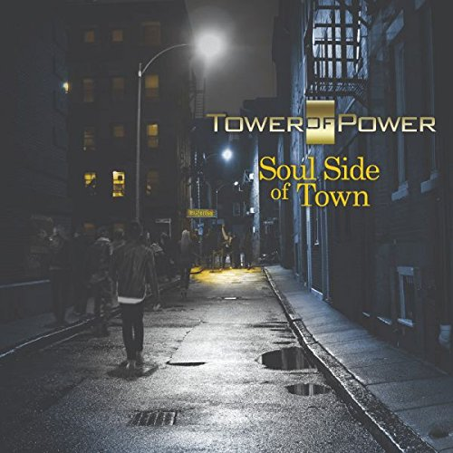
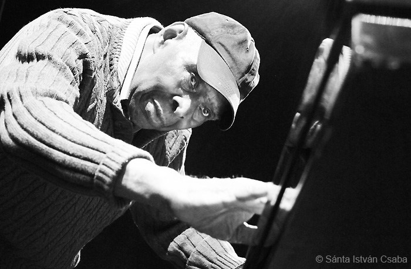
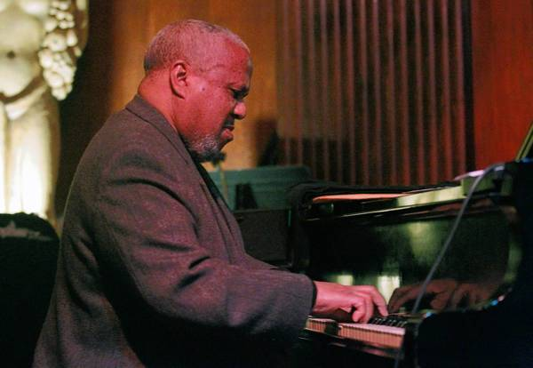

Blog
Tower of Power: Soul Side
June 04, 2018
In 1970, many of the surging white brass bands that played pop-rock were jazz influenced. The list included Blood Sweat & Tears, Chicago, the Flock, Dream and Collective Consciousness Society. And then there was Tower of Power, a largely white band weened on the soul-funk feel of the Mar-Keys, the James Brown Orchestra and other high-voltage R&B horn sections. I remember when East Bay Grease was released in 1970. The cover was nocturnal and cool—a black map of the Bay Area with white streets. The only way you could have known about the album and Rufus Miller's lead vocals is if a friend came back from San Francisco with it. The album was originally on Bill Graham's Fillmore label with limited distribution.
Oakland after World War II was a solid jazz and R&B hub. San Francisco was home to the Naval Station Treasure Island, and Oakland's Seventh Street was peppered with clubs that featured home-grown and touring artists. In the late 1960s, the historic neighborhood was shredded by the construction of the Bay Area Rapid Transit's above-ground track, eradicating what had been a African-American cultural haven. Much of the blues action shifted to San Francisco's Haight-Ashbury district. Many of the old theaters that became rock concert spaces attracted a significant number of British bands raised on American blues records and many African-American electric blues guitarists from Chicago. Tower of Power emerged in this environment—part funkified cover band, part band seeking its own soulful sound.
What made Tower of Power special was its tight horn section (trumpeters Greg Adams and David Padron; and saxophonists Emilio Castillo, Skip Mesquite and Steve Kupka), passionate vocals and standout drummer David Garibaldi. The band paid homage to both the greasy Oakland sound and the earthy soul of Memphis.
International Jazz RIPs, 2017
January 8, 2018 by Howard Mandel
Photographer-writer-author Ken Franckling has painstakingly compiled a compendium of more than 400 jazz artists and associates from around the world who died in 2017, with links to obituaries of most of them. Posted at JJANews.org.
It’s a striking document and useful resource, though Franckling says, sadly, “The list seems to get depressingly longer each year.”
Maybe that’s because jazz itself — at least as so recorded and promoted — is now more than 100 years old and the Roswell Rudd post-WWII generations that gave the art form its fervent audiences and inspired players for the past 70 years are inevitably thinning.
But as Franckling depicts in his recent book Jazz in the Key of Light, energy and brilliance yet abound. My own 2017 experiences Willie Pickens, photo by Marc PoKempner of jazz in schools, nightclubs, festivals and grassroots events across the country, in Europe, Asia, South and Central America, in general media manifestations and the stubbornly independent underground suggest the music is everywhere, really, if often overlooked and underfinanced.
Celebrating Chicago pianist Willie Pickens (1931-2017)
December 13, 2017 by Howard Mandel
Pianist Willie Pickens, 86, a powerful, lyrical and generous modernist who performed, taught and mentored young musicians from Chicago starting in 1959, died of a heart attack on Dec. 12 while at Jazz at Lincoln Center in New York City, readying himself to play at Dizzy’s Club Coca-Cola with 29-year-old trumpeter Marquis Hill. Having heard him often in the past three years, I can attest that Pickens was at the height of his creativity, and a warm, engaging presence in every public context.
For instance, at the 40th anniversary party of Southport Records (which put out his debut cd as a leader, It’s About Time!, in 1986) at the Green Mill last Nov. 5, Willie performed a stunning rendition of “Giant Steps,” John Coltrane’s chord-running piece, and then improvised piano duets with composer George Flynn. The two tangled seriously, thornily, although they’d only had talk-through preparation. Willie said afterwards that he’d had to stretch.
However, extending himself seemed to come naturally for this gentleman, who taught music in Chicago’s public schools from the mid ’60s until the mid ’90s, when he went on international tour with Coltrane drummer Elvin Jones’ Jazz Machine.